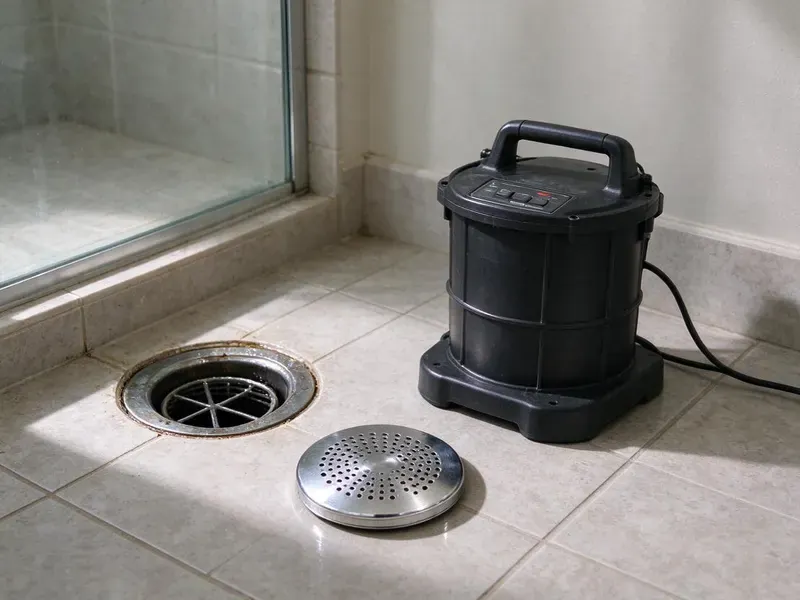
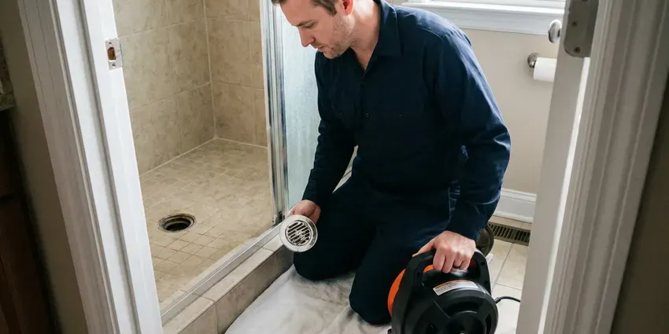
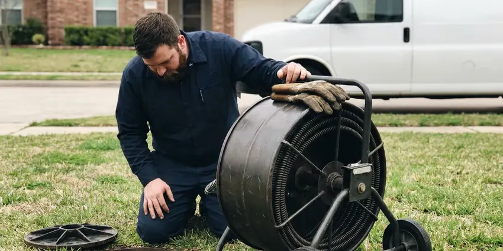
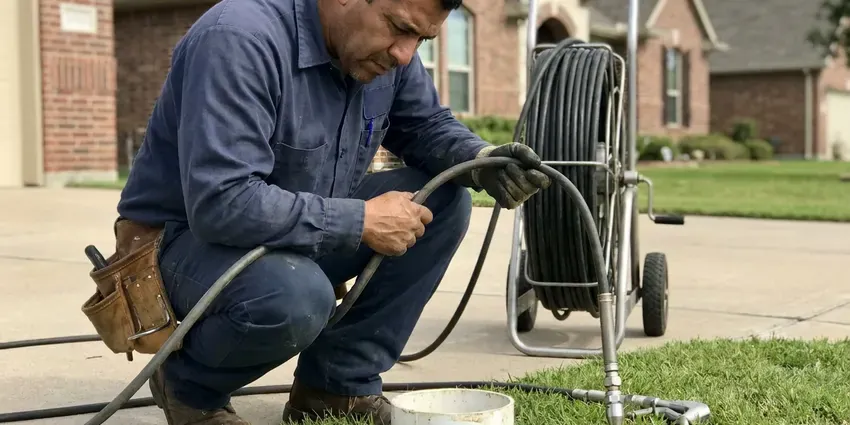

Drain Services in Morgantown, WV
For all your drain service needs in Morgantown, WV, count on GJK Plumbing to get the job done right, quickly and effectively.
- Fast Clog Removal
- Sewer Line Specialists
- Sewer Line Experts
- Experienced Plumbers
Need Professional Drain Services in Morgantown, WV?
Contact GJK Plumbing today for dependable service and lasting solutions.
Drain Services in Morgantown, WV for Every Clog and Sewer Problem
When drain problems disrupt your Morgantown household, GJK Plumbing is here to help. Our experienced plumbers specialize in diagnosing and resolving issues from simple sink clogs to complex sewer line breaks, ensuring your plumbing runs properly again.
Our expertise includes:
- Skilled sewer line repair and trenchless replacement.
- High-pressure hydro jetting for tough clogs
- Advanced drain camera inspections and diagnostics.

Additional Drain Services Services in Morgantown, WV
From stubborn kitchen clogs to main sewer backups, our drain services in Morgantown, WV clear the line and keep it clear with camera-verified results.


Drain Cleaning in Morgantown

Local sewer cleaning by GJK Plumbing, Morgantown

Hydro Jetting service for Morgantown homeowners


Customers
Why Choose GJK Plumbing for Drain Services in Morgantown, WV?
Flash flooding is a serious risk in West Virginia, where heavy rain moves quickly down steep slopes into narrow valleys and creeks. Heavy storms can dump a lot of water in a short time, and clogged yard drains or scuppers can send it toward the foundation. Keeping storm and yard drains clear prevents flooding.
- Long-Term Fixes, We focus on providing solutions that last, rather than just quick fixes, saving you time and money.
- Lasting Solutions, Our goal is to provide repairs and replacements that stand the test of time, preventing recurring issues and protecting your home's plumbing system.
- Right Equipment, We carry cable machines, jetters and cameras so we can handle any clog on the first visit.
Citywide Coverage
Whether the clog is a single kitchen sink or a main line backing up into every tub, we cover all of Morgantown. Same-day service is available for most calls.
Experienced Team
Our team of plumbers is very experienced in diagnosing and resolving all types of drain and sewer issues common in West Virginia homes. They undergo ongoing training on the latest techniques and equipment, ensuring top-tier service for our Morgantown customers.
Safety-First Approach
We put first the safety of your home and our technicians during all drain services. Our team in Morgantown follows strict safety protocols and uses proper protective equipment, ensuring a secure and compliant service experience every time.
Trusted Certified Morgantown Plumbing Services Professionals
At GJK Plumbing, we take pride in providing licensed, certified plumbing services throughout Morgantown, WV. Backed by recognized industry credentials, our experienced plumbers combine technical skill with genuine customer care. Whether it is repair, installation, or maintenance, we follow strict safety and quality standards to deliver long-lasting results you can trust.
Call Us Now PHCC Plumbing Contractor Recognition
PHCC Plumbing Contractor Recognition Better Business Bureau (BBB) Accreditation
Better Business Bureau (BBB) Accreditation Angi Certified Pro
Angi Certified Pro ISO 9001 Quality Management Certification
ISO 9001 Quality Management CertificationComprehensive Drain Services in Morgantown, WV
Preventative Drain Maintenance in Morgantown
Regular drain maintenance can prevent most major clogs and extend the life of your plumbing system. For homes in Morgantown, especially those with older pipes or frequent issues with hard water and tree roots, scheduled cleaning can save you from costly emergencies. We offer tailored maintenance plans that include inspections and targeted cleaning to keep your drains flowing smoothly year-round. This proactive approach is highly recommended.

Emergency Drain Unblocking in Morgantown, WV
A completely blocked drain or a sewage backup is an emergency that requires immediate attention. GJK Plumbing provides rapid response for emergency drain unblocking services in Morgantown, WV. We understand that these situations can cause real stress and potential health hazards. Our technicians are available to promptly diagnose and clear severe blockages, restoring functionality and peace of mind to your home.
Advanced Drain Diagnostics in Morgantown, WV
Understanding the exact cause and location of a drain problem is key to an lasting repair. Our advanced drain diagnostics include video camera inspections, allowing us to visually inspect the interior of your pipes. This helps us identify cracks, misalignments, root intrusions, or persistent clogs without invasive digging, providing accurate information for targeted repairs in your Morgantown home.
Drain Jetting and Unblocking for Businesses in Morgantown
Restaurant kitchens, salons and multi-unit buildings put far more grease, hair and debris down their drains than a typical home. We clear floor drains, grease lines and main sewer lines, often after hours to avoid closing. Scheduled jetting every three to six months keeps grease lines open and cuts down on emergency calls. We can also coordinate with grease trap pumping. Service records are provided for health inspections.
High-Power Hydro Jetting in Morgantown
For the toughest clogs and stubborn buildup, hydro jetting is an incredibly effective solution. This method uses high-pressure water streams to scour the inside of your pipes, removing grease, mineral deposits, scale, and even small tree roots. It's an effective preventative measure for older homes in Morgantown with cast iron pipes, providing a comprehensive cleaning that traditional snaking cannot match. This leaves your pipes clean from wall to wall.
Advanced Sewer Cleaning in Morgantown, WV
When the problem lies deeper within your main sewer line, our sewer cleaning services are the answer. We use specialized equipment to clear blockages caused by tree roots, sludge, and debris that accumulate over time. Ignoring sewer line issues can lead to widespread backups throughout your home, a situation no homeowner in Morgantown, WV wants to face. Our goal is to prevent such emergencies with regular cleaning.
Hydro Jetting in Morgantown
Hydro jetting sends water at up to 4,000 psi through a specialized nozzle that scours the full inside wall of the pipe. Unlike a cable, which punches a hole through the clog, jetting removes grease, scale and fine roots completely. It is the go-to method for restaurant drains and lines that clog again within months. We camera the line first to make sure the pipe is sound enough for jetting. Most residential jetting jobs take two to three hours.

Commercial Drain Services in Morgantown, WV
Businesses in Morgantown, WV often have specific and demanding drain service needs due to higher usage and specific waste types. GJK Plumbing provides complete commercial drain services, including grease trap cleaning, main line clearing, and preventative maintenance for restaurants, retail spaces, and other establishments. We understand the importance of limiting downtime and ensuring compliance with health regulations for your business.
Drain Services Near Me in Morgantown, WV
When you search for 'drain services near me' in Morgantown, WV, GJK Plumbing is your trusted local provider. We are deeply familiar with the plumbing infrastructure throughout the area and are committed to serving our community with reliable and prompt service. Our team is always ready to respond to your call.
If you are searching for drain services near me, you probably need help today, not next week. GJK Plumbing serves Morgantown with trucks equipped for cable cleaning, jetting and camera inspection. We offer same-day appointments for most clogs.
GJK Plumbing at a Glance
- Fully licensed plumbing team covering Morgantown, WV
- 24/7 emergency service with same-day scheduling
- Clear written estimates, no hidden fees
- 4.8-star rated by 832+ West Virginia customers
Morgantown Map
Morgantown Information
- Population
- 30,429
- Area codes
- 304/681/724
- Service area
- Morgantown and communities within 40 miles
- Nearby
- Brookhaven, Cheat Lake, Fairmont, Bridgeport
Effective drain services are critical for homes in Morgantown, WV, where shifting soil can stress plumbing lines and mineral-rich water can leave heavy buildup inside pipes.
Expert Services
Trust our professionals for reliable GJK Plumbing solutions in Morgantown, WV.
Our Specialized Plumbing Services in Morgantown, WV
At GJK Plumbing, we provide a complete range of plumbing services across Morgantown, WV. From leak detection to full system installations, our team ensures fast, precise, and affordable service for both residential and commercial properties. Explore our core services below:


How Our Drain Services Process Works in Morgantown, WV
We follow a consistent, step-by-step approach to diagnose, clear, and ensure the long-term health of your drain system.
Request a Quote
Contact us at (681) 223-3607 to describe your drain issue. We will schedule a good time for a professional to assess your plumbing needs and provide an upfront quote.
On-Site Diagnosis
Our technician arrives on time, performs a thorough inspection using diagnostic tools like drain cameras, and identifies the exact cause and location of your drain problem.
Expert Resolution
We implement the most effective solution, whether it is drain cleaning, hydro jetting, or sewer line repair. We ensure the work is done neatly and efficiently, restoring your drain function.
Frequently Asked Questions About Drain Services in Morgantown
The cost of drain services in Morgantown, WV can vary a great deal, typically ranging from $150 for a simple clog removal to over $5,000 for a major sewer line replacement. Factors like the type of blockage, its location, and the method required (for example, snaking versus hydro jetting) all affect the final price. We provide transparent, upfront pricing after an on-site assessment.
Avoid pouring grease down drains, use drain screens in sinks and showers to catch hair and food particles, and be mindful of what gets flushed down toilets. Regular preventative maintenance, like an annual professional drain cleaning, can also be very effective.
Yes, GJK Plumbing stands behind our work. We offer warranties on our drain cleaning and repair services, with specific terms depending on the type of service performed. Details will be provided with your invoice.
Hydro jetting uses high-pressure water to clean the interior surfaces of your pipes, thoroughly removing grease, scale, and even tree roots. It is safe for most modern plumbing systems. Our technicians will perform a camera inspection first to ensure your pipes are structurally sound enough to withstand the process.
Hair, grease, soap scum and hard water scale cause most fixture clogs. Main line clogs are often caused by wipes, tree roots or a sag in the pipe.
Tree roots are naturally attracted to the moisture and nutrients inside sewer lines, and dry spells can make them seek out any available water source. Tiny cracks or loose joints in older sewer pipes provide an entry point, allowing roots to grow and eventually block the line. Rocky, steep terrain is common across West Virginia, and many homes sit on hillsides where drainage and slope movement affect buried lines. Shifting soil can also cause pipe movement, creating these access points.
Many homes benefit from main line cleaning every one to two years, especially with mature trees nearby. Restaurants usually need jetting every three to six months.
Routine drain cleaning and jetting do not require permits. Sewer line repair or replacement usually does, and we handle those permits.
What People Are Saying About Our Plumbing Experts?

Mark T.
When our office needed drain cleaning, GJK Plumbing provided quick, reliable service. The plumber arrived on time and made sure every drain flowed perfectly before leaving. Very satisfied.
Drain Cleaning · Clarksburg, WV
Patricia H.
We had a slab leak that two other companies could not find. GJK Plumbing located it in under an hour, explained our options, and the price matched the quote to the dollar.
Slab Leak Repair · Bridgeport, WV
Robert G.
The trenchless sewer replacement saved our front yard. They walked us through the camera inspection footage first so we knew exactly what we were paying for.
Sewer Line Replacement · Bridgeport, WV
Emily R.
I called GJK Plumbing for plumbing repair, and the technician was fast, polite, and thorough. They explained the problem clearly and fixed it the same day. I will definitely hire them again. Highly recommended!
Plumbing Repair · Bridgeport, WV
Sofia M.
Two new toilets installed in one visit, no mess left behind, and the tech even adjusted a faucet he noticed was dripping. Fair pricing and really friendly.
Toilet Installation · Brookhaven, WVJames P.
Our commercial plumbing system had a leak under the sink, and GJK Plumbing handled it professionally. The plumbers arrived quickly and restored everything without disruption to our customers.
Commercial Plumbing · Fairmont, WV